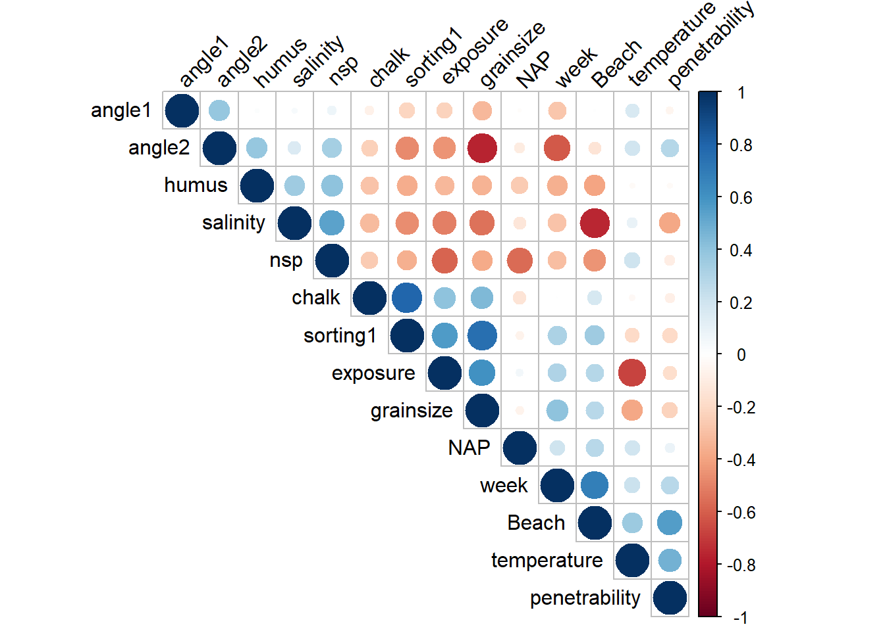

Chapter 13 Real life examples using linear models
In previous sections we explored the different aspects of linear models, evaluating their performance and properties leveraging highly on simulated data. Simulated data represents a fantastic way to look at models knowing what reality is, and hence evaluate their properties under known scenarios, but naturally represent constrained realities that are rarely encountered in practice. Therefore, here, we use all that we have learned before to try to use linear models applied to real data. Therefore, while we will have no idea how well we are doing, this will be akin to what a researcher might have to do when working its own data.
An important aspect to highlight is that there are certain decisions, especially those related to what variable one should measure when trying to explain a given response variable, which are fundamental to the model performance but which are heavily dependent on a researcher’s knowledge about is specific knowledge domain. Here we assume that the variables available in the datasets would be a reasonable subset of variables to consider in modelling the response, but we note that the importance of that choice, as well as of the survey design and field methods considered to obtain the data, cannot be overstated.
13.1 RIKZ data
This dataset contains the abundance of 75 species of invertebrates at 45 sites across 9 beaches in the Netherlands. Each data row represents a site. Columns 2 to 76 contain species and their abundances. In the following columns several explanatory variables are available.
The data was originally used in Zuur, Ieno, and Smith (2007) and is freely available at said book website. The dataset is used in several chapters of Zuur, Ieno, and Smith (2007), in particular chapter 27 Janssen et al. (2007) where it is used to illustrate a set of both univariate and multivariate analysis. The data was later also used by Zuur et al. (2009b), in particular to explore the notion of random effects in a mixed model context. Here, we simply use it to try to model the number of species per site, usually referred to as species richness by ecologists, as a function of available covariates assuming a linear model. This does not mean that the linear model would be the best tool in practice - it would not, for multiple reasons, see the discussion at the end - but it is a useful dataset to illustrate fitting a linear model to data.
We begin by reading the data
and noting that it contains:
- a first column with a site indicator variable
- columns 2 to 76 contain the abundances per species
- the remaining columns contain potential explanatory variables, including
week: the week of sampling of a given beach, corresponding to the week each beach was sampled. Values varie from 1 to 4;angle1: an angle measured at the site levelangle2: an angle measure at the beach levelexposure: a measure of exposure at the beach level
salinity: salinity, in parts per 1000, at the beach leveltemperature: temperature, in ºC, at the beach levelNAP: a measure of how much a site is submerged during the tidal cycle, corresponding to the height of the sampling site relative to the mean tidal levelpenetrability: A measure of how much the substrate is permeable, at the site levelgrainsize: a measure of substrate granularity, at the site levelhumus: percentage of organic material, at the site levelchalk: percentage of chalk, at the site levelsorting1: no idea what this is!Beach: the beach indicator (a factor covariate, levels 1 to 9)
We begin by creating the response variable, which is conveniently obtained by summing across rows, i.e. per site, how many species had 1 or more individuals:
The first thing to do in any statistical modelling exercise is to look at the data, so we begin by exploring the response variable, noting that we had on average 5.69 species present per site, ranging from 0 to 22 species per site. While counts like these should be treated as such, hence using at the very least a generalized linear model with a count response, we ignore that fact here.

Next, it seems relevant to explore the available covariates to be used to explain species richness. Beach and week are rather uninteresting for our current objectives - even though they might be fundamental for the full story behind this dataset - and so we ignore them here. We can distinguish variables available at the beach level, hence with only 9 different measurements for each variable, for which we have four
par(mfrow=c(2,2),mar=c(4,4,0.5,0.5))
hist(RIKZlm$angle2,main="")
hist(RIKZlm$exposure,main="")
hist(RIKZlm$salinity,main="")
hist(RIKZlm$temperature,main="")
from those at the site level, for which we have eight, hence with 45 measurements each. Presumably the later might be more useful to explain the species richness, since there is variability within beach on the number of species present at a site
par(mfrow=c(4,2),mar=c(4,4,0.5,0.5))
hist(RIKZlm$angle2,main="")
hist(RIKZlm$NAP,main="")
hist(RIKZlm$penetrability,main="")
hist(RIKZlm$grainsize,main="")
hist(RIKZlm$humus,main="")
hist(RIKZlm$chalk,main="")
hist(RIKZlm$sorting1,main="")
Finally, we can explore the correlations betweeen the diferent covariates between themselves and with the response variable, and for that corrplot can be most useful.
## corrplot 0.94 loaded
We can see that variables NAP and exposure seem negatively related to the response, while salinity and humus seem positively related to the response. We can also note some explanatory variables are considerably correlated, as an example, salinity with exposure or exposure with temperature. That could create instability in models including these pairs of variables.
Just to start exploring models, we fit univariate models of the apparent best single predictors.
modNAP<-lm(nsp~NAP,data=RIKZ4m)
modExp<-lm(nsp~exposure,data=RIKZ4m)
modSal<-lm(nsp~salinity,data=RIKZ4m)
modHum<-lm(nsp~humus,data=RIKZ4m)
summary(modExp)##
## Call:
## lm(formula = nsp ~ exposure, data = RIKZ4m)
##
## Residuals:
## Min 1Q Median 3Q Max
## -6.3882 -2.2412 -0.2412 1.7588 15.6118
##
## Coefficients:
## Estimate Std. Error t value Pr(>|t|)
## (Intercept) 37.8588 6.8682 5.512 1.86e-06 ***
## exposure -3.1471 0.6692 -4.703 2.66e-05 ***
## ---
## Signif. codes: 0 '***' 0.001 '**' 0.01 '*' 0.05 '.' 0.1 ' ' 1
##
## Residual standard error: 4.113 on 43 degrees of freedom
## Multiple R-squared: 0.3396, Adjusted R-squared: 0.3243
## F-statistic: 22.11 on 1 and 43 DF, p-value: 2.664e-05##
## Call:
## lm(formula = nsp ~ NAP, data = RIKZ4m)
##
## Residuals:
## Min 1Q Median 3Q Max
## -5.0675 -2.7607 -0.8029 1.3534 13.8723
##
## Coefficients:
## Estimate Std. Error t value Pr(>|t|)
## (Intercept) 6.6857 0.6578 10.164 5.25e-13 ***
## NAP -2.8669 0.6307 -4.545 4.42e-05 ***
## ---
## Signif. codes: 0 '***' 0.001 '**' 0.01 '*' 0.05 '.' 0.1 ' ' 1
##
## Residual standard error: 4.16 on 43 degrees of freedom
## Multiple R-squared: 0.3245, Adjusted R-squared: 0.3088
## F-statistic: 20.66 on 1 and 43 DF, p-value: 4.418e-05##
## Call:
## lm(formula = nsp ~ salinity, data = RIKZ4m)
##
## Residuals:
## Min 1Q Median 3Q Max
## -9.732 -2.689 -1.058 2.391 12.268
##
## Coefficients:
## Estimate Std. Error t value Pr(>|t|)
## (Intercept) -57.4246 15.1286 -3.796 0.000456 ***
## salinity 2.2460 0.5379 4.176 0.000142 ***
## ---
## Signif. codes: 0 '***' 0.001 '**' 0.01 '*' 0.05 '.' 0.1 ' ' 1
##
## Residual standard error: 4.269 on 43 degrees of freedom
## Multiple R-squared: 0.2885, Adjusted R-squared: 0.2719
## F-statistic: 17.43 on 1 and 43 DF, p-value: 0.0001423##
## Call:
## lm(formula = nsp ~ humus, data = RIKZ4m)
##
## Residuals:
## Min 1Q Median 3Q Max
## -5.6801 -3.0894 -1.0894 0.9106 17.9106
##
## Coefficients:
## Estimate Std. Error t value Pr(>|t|)
## (Intercept) 4.0894 0.8822 4.636 3.31e-05 ***
## humus 31.8127 10.9393 2.908 0.00573 **
## ---
## Signif. codes: 0 '***' 0.001 '**' 0.01 '*' 0.05 '.' 0.1 ' ' 1
##
## Residual standard error: 4.627 on 43 degrees of freedom
## Multiple R-squared: 0.1644, Adjusted R-squared: 0.1449
## F-statistic: 8.457 on 1 and 43 DF, p-value: 0.005732on their own, all these would seem like relevant predictors. If we only had one of them, we might be happy enough. But here we have several. What happens if we use a pair of them, say NAP and exposure:
##
## Call:
## lm(formula = nsp ~ NAP + exposure, data = RIKZ4m)
##
## Residuals:
## Min 1Q Median 3Q Max
## -4.3083 -1.7107 -0.8489 0.7674 13.3264
##
## Coefficients:
## Estimate Std. Error t value Pr(>|t|)
## (Intercept) 37.2909 5.1878 7.188 7.83e-09 ***
## NAP -2.7252 0.4716 -5.779 8.26e-07 ***
## exposure -2.9988 0.5060 -5.926 5.07e-07 ***
## ---
## Signif. codes: 0 '***' 0.001 '**' 0.01 '*' 0.05 '.' 0.1 ' ' 1
##
## Residual standard error: 3.106 on 42 degrees of freedom
## Multiple R-squared: 0.6321, Adjusted R-squared: 0.6146
## F-statistic: 36.09 on 2 and 42 DF, p-value: 7.577e-10The model seems to have improved. What should we try next? Perhaps salinity
##
## Call:
## lm(formula = nsp ~ NAP + exposure + salinity, data = RIKZ4m)
##
## Residuals:
## Min 1Q Median 3Q Max
## -4.7980 -1.2762 -0.2463 0.7915 11.6894
##
## Coefficients:
## Estimate Std. Error t value Pr(>|t|)
## (Intercept) 0.5746 15.7414 0.036 0.97106
## NAP -2.5881 0.4492 -5.762 9.43e-07 ***
## exposure -2.3201 0.5524 -4.200 0.00014 ***
## salinity 1.0580 0.4310 2.455 0.01844 *
## ---
## Signif. codes: 0 '***' 0.001 '**' 0.01 '*' 0.05 '.' 0.1 ' ' 1
##
## Residual standard error: 2.936 on 41 degrees of freedom
## Multiple R-squared: 0.6793, Adjusted R-squared: 0.6558
## F-statistic: 28.94 on 3 and 41 DF, p-value: 3.257e-10it seems like we have again improved model fit. What if we try humus
##
## Call:
## lm(formula = nsp ~ NAP + exposure + salinity + humus, data = RIKZ4m)
##
## Residuals:
## Min 1Q Median 3Q Max
## -4.5345 -1.6547 -0.1288 0.7652 12.0831
##
## Coefficients:
## Estimate Std. Error t value Pr(>|t|)
## (Intercept) 1.2819 15.9181 0.081 0.936216
## NAP -2.5269 0.4651 -5.433 2.95e-06 ***
## exposure -2.2593 0.5668 -3.986 0.000277 ***
## salinity 1.0019 0.4453 2.250 0.030031 *
## humus 4.5179 7.8241 0.577 0.566886
## ---
## Signif. codes: 0 '***' 0.001 '**' 0.01 '*' 0.05 '.' 0.1 ' ' 1
##
## Residual standard error: 2.96 on 40 degrees of freedom
## Multiple R-squared: 0.6819, Adjusted R-squared: 0.6501
## F-statistic: 21.44 on 4 and 40 DF, p-value: 1.646e-09it seems like, given the previous 3 variables, humus is no longer relevant, even if it was apparently random on its own. That should not be a surprise. Just most of your friends might be useful in explaining you to me, they became redundant once I ask your best to explain you to me!
Imagine for a second we would have started from a full model
##
## Call:
## lm(formula = nsp ~ ., data = RIKZ4m[, -1])
##
## Residuals:
## Min 1Q Median 3Q Max
## -4.5434 -1.3910 -0.2209 0.8268 11.6548
##
## Coefficients:
## Estimate Std. Error t value Pr(>|t|)
## (Intercept) -21.714257 62.877690 -0.345 0.732
## week 1.537678 2.873627 0.535 0.596
## angle1 -0.008529 0.011166 -0.764 0.451
## angle2 0.078737 0.062419 1.261 0.217
## exposure -0.192513 1.988243 -0.097 0.923
## salinity -0.149684 2.557775 -0.059 0.954
## temperature 1.645499 1.501715 1.096 0.282
## NAP -2.727377 0.591672 -4.610 6.55e-05 ***
## penetrability -0.008968 0.008525 -1.052 0.301
## grainsize 0.015923 0.032054 0.497 0.623
## humus -0.361549 9.275088 -0.039 0.969
## chalk -0.127028 0.141104 -0.900 0.375
## sorting1 0.004410 0.042521 0.104 0.918
## Beach -1.044276 1.717248 -0.608 0.548
## ---
## Signif. codes: 0 '***' 0.001 '**' 0.01 '*' 0.05 '.' 0.1 ' ' 1
##
## Residual standard error: 3.14 on 31 degrees of freedom
## Multiple R-squared: 0.7226, Adjusted R-squared: 0.6063
## F-statistic: 6.211 on 13 and 31 DF, p-value: 1.527e-05in such a case, several of the variables we think are relevant seem irrelevant, and only NAP stands out. Using the friends analogy, if I ask ten of your friends, including your best friend, about yourself, all the chatter across the 9 friends just seems contradictory, and only your best friend might be reliable. The problem with data is that you never know to begin whom our best friend might be, in other words, who might be the best in explaining the response.
One possible approach might be to consider all possible model combinations. Here, excluding interaction terms for now, with 11 potential covariates, that would be a large number of models to fit to the data, namely 1 model with no variables, 11 models with 1 variable, plus combinations of 11, 2 by 2, of two variables, and hence forth, up to combinations of 11, 10 by 10 variables (that’s 11 again!), plus 1 model with all covariates. That corresponds to 2048 (=\(2^{11}\)) models, which is a lot to run manually.
We can leverage the ability of function bestglm from package bestglm to do so and report on the best model across all of them, conditional on some model performance metric. This package requires the data to be in a single data.frame with all variables named, and one of them, the response, named y. We do so here
and then run the procedure, selecting here AIC (Akaike’s Information Criteria) as the criteria for selecting the most parsimonious model.
## Loading required package: leapsThe most parsimonious model according to AIC is
## AIC
## BICq equivalent for q in (0.234777596202668, 0.788421926315081)
## Best Model:
## Estimate Std. Error t value Pr(>|t|)
## (Intercept) 0.574551 15.7413843 0.0364994 9.710613e-01
## exposure -2.320101 0.5524193 -4.1998914 1.402696e-04
## salinity 1.058035 0.4310479 2.4545640 1.843901e-02
## NAP -2.588074 0.4491540 -5.7621070 9.426989e-07which was actually the model we had stopped at above.
Note that in fact bestglm does not, by default, run all models. You can do so by turning the argument RequireFullEnumerationQ, by default FALSE, to be TRUE. However, not that might take some time to run. By default the function uses an algorithm, named the leaps algorithm, to search the model space. In general that provides the best model, under some conditions that are too technical for me to want to discuss them here.
This section needs some more details, it currently just reproduces what I did in class with the students. Students are challenged to help me complete it.